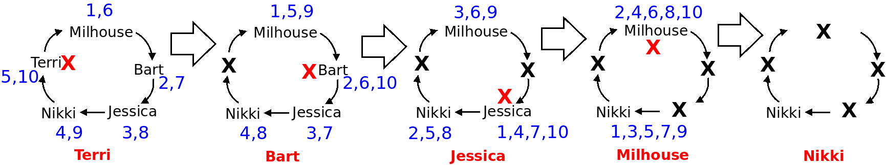

In what concerns the continuous evaluation solving exercises grade during the semester, you should submit until 23:59 of November 8th
(this exercise will still be available for submission after that deadline, but without counting towards your grade)
[to understand the context of this problem, you should read the class #05 exercise sheet]
In this problem you should submit a function as described. Inside the function do not print anything that was not asked!
The name of the .py source file you submit to Mooshak should NOT start with a digit (you will get an error if you submit it like that).
Milhouse Van Houten, Springfield Elementary's most optimistic and often anxious student, is hanging out with his friends during recess. It's a sunny day, and the kids are gathered on the playground, deciding which games to play. As they throw around ideas, Nelson Muntz, the school’s resident bully, shows up and starts eyeing Milhouse with that mischievous glint in his eye.
Fearing he might become Nelson's next target, Milhouse panics and decides he needs to take control of the situation. The group decides to play a classic game of "Eeny Meeny Miny Moe" to determine who will be "it" for their next game of tag. However, Milhouse knows that if he ends up being chosen, he might have to face the wrath of Nelson.
Milhouse quickly realizes he can use the game to his advantage by trying to ensure he doesn't get picked. To do this, he wants to track the order in which the kids are eliminated during the game, so he can calculate whether he might get stuck in the "it" position when it's his turn.
Write a function eeny_meeny(lst, k) that given a list lst of strings and an integer k, plays Eeny, meeny, miny, moe, a counting-out game (the equivalent in Portugal would be "Pim Pam Pum").
The game works by putting the children in circular fashion, starting with the first element of the list and then eliminating every k-th child of the game, continuing with the next remaining child. You should return a list containing the names of the children in the order they go out of the game.
The following figure illustrates the first example input with lst=["Milhouse","Bart","Jessica","Nikki","Terri"] and K=10. The blue numbers indicating the counting, and every time we reach 10 we remove a child from the game.

The following limits are guaranteed in all the test cases that will be given to your program:
| 1 ≤ |lst| ≤ 100 | Length of list | |
| 1 ≤ k ≤ 100 | Elimination factor |
| Example Function Calls | Example Output |
print(eeny_meeny(["Milhouse","Bart","Jessica","Nikki","Terri"], 10)) print(eeny_meeny(["PedroR","Miriam","Alberto","Tadeu","Francesco","PedroM"], 3)) |
['Terri', 'Bart', 'Jessica', 'Milhouse', 'Nikki'] ['Alberto', 'PedroM', 'Tadeu', 'Miriam', 'Francesco', 'PedroR'] |